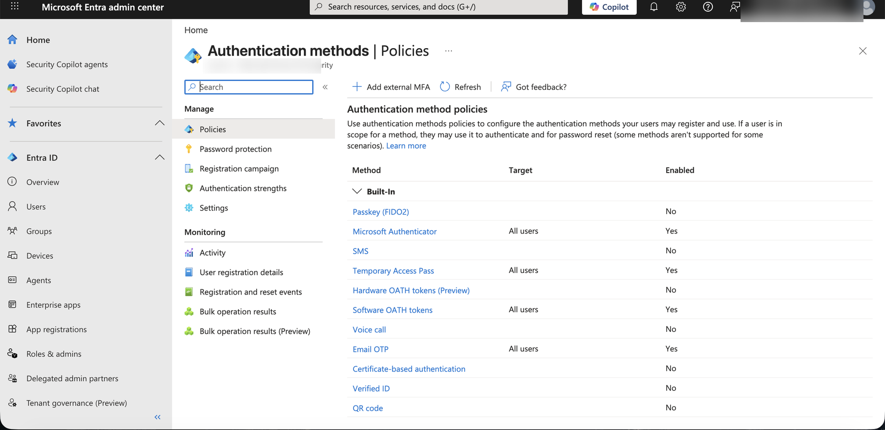
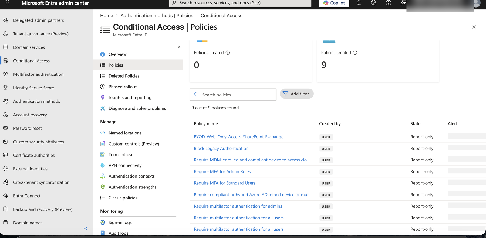
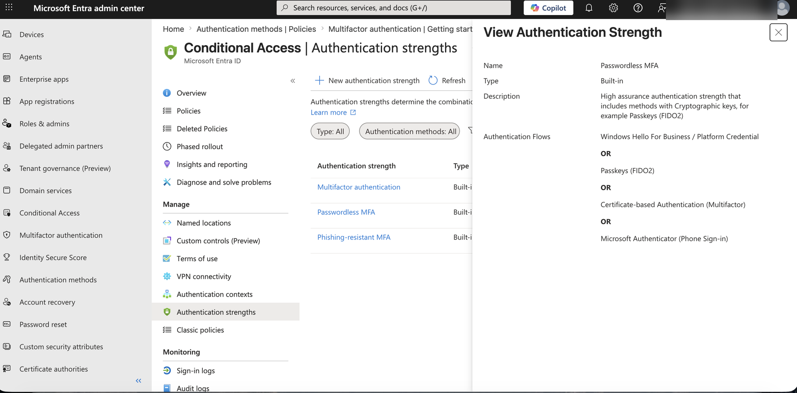
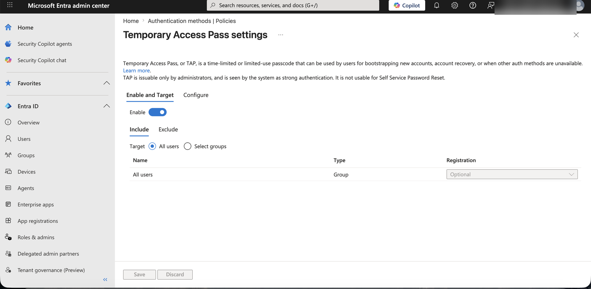
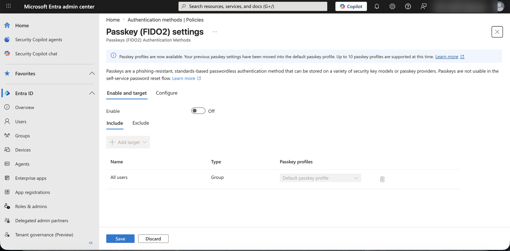
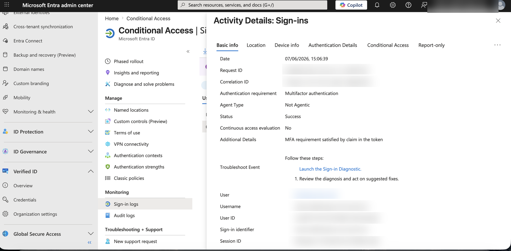

A release-candidate architecture and rollout planning case study for moving a 40,000-employee fictional Canadian financial institution from password-based sign-in toward phishing-resistant, passwordless authentication across corporate Windows devices, branch terminals, and remote workers.
Following a simulated password-spray incident that compromised 14 branch accounts in Q3 2024, NorthBridge's Identity & Access Management team initiated a phased passwordless authentication modernization program under the direction of the Chief Information Security Officer.
| Driver | Detail |
|---|---|
| Regulatory pressure | OSFI B-13 Technology and Cyber Risk Guideline requires phishing-resistant MFA for privileged and high-risk access |
| Incident response | Q3 2024 password-spray attack — 14 accounts compromised, 6-hour containment, $340K estimated response cost |
| Zero Trust alignment | NorthBridge Zero Trust roadmap requires device-bound, phishing-resistant credentials by Q4 2025 |
| User experience | 2,200 help desk tickets per quarter are password-related (resets, lockouts, expired credentials) |
| Operational cost | Password reset tickets cost an estimated $18-$22 per ticket — $40K-$48K per quarter in support overhead |
Target-state Microsoft Entra ID architecture for a phased move away from password-based sign-in, spanning corporate Windows devices, branch terminals, and remote workers.
Target-state sign-in workflow combining device context, Conditional Access, Identity Protection, and phishing-resistant authentication methods before Entra ID issues an access token.
↻ Failed checks at any evaluation step loop back to step-up authentication or Temporary Access Pass recovery, rather than allowing sign-in to proceed.
View standalone interactive version →| Method | Use Case | Device Type | Phishing-Resistant | Phase |
|---|---|---|---|---|
| Windows Hello for Business | Primary sign-in for corporate Windows devices | Managed Windows 10/11 | Yes | Phase 1-2 |
| FIDO2 Security Keys | Shared workstations, branch terminals, privileged access | Any | Yes | Phase 2-3 |
| Microsoft Authenticator Passwordless | Remote and mobile workers | iOS / Android | Yes | Phase 1-2 |
| Temporary Access Pass (TAP) | Onboarding, device replacement, recovery | Any | Time-limited | Ongoing |
| Certificate-based Auth (CBA) | Executive and high-privilege accounts | Managed devices | Yes | Phase 2 |
Sanitized screenshots from a lab or simulated enterprise Microsoft Entra ID environment. Sensitive tenant labels, account identifiers, and session details are redacted. These demonstrate configuration concepts and validation points — not proof of completed production deployment.






The PowerShell scripts used for passwordless readiness assessment in this project
(Get-PasswordlessReadiness.ps1, New-TAPForUser.ps1) are part of
Phase 10 of the AD Identity Operations Toolkit.
This repo covers enterprise architecture and deployment governance. The AD Toolkit covers the PowerShell assessment layer. Same NorthBridge Financial Group scenario — complementary, not duplicate.
View AD-Identity-Operations-Toolkit →This page presents target-state architecture, planning artifacts, and sanitized lab evidence for NorthBridge Financial Group, a fictional federally regulated Canadian financial institution. It does not represent a completed production tenant deployment. See the repository README for full project context, including current evidence status and related artifacts.